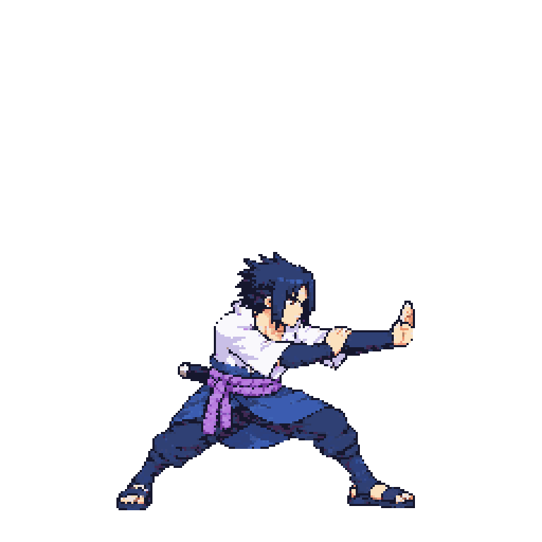
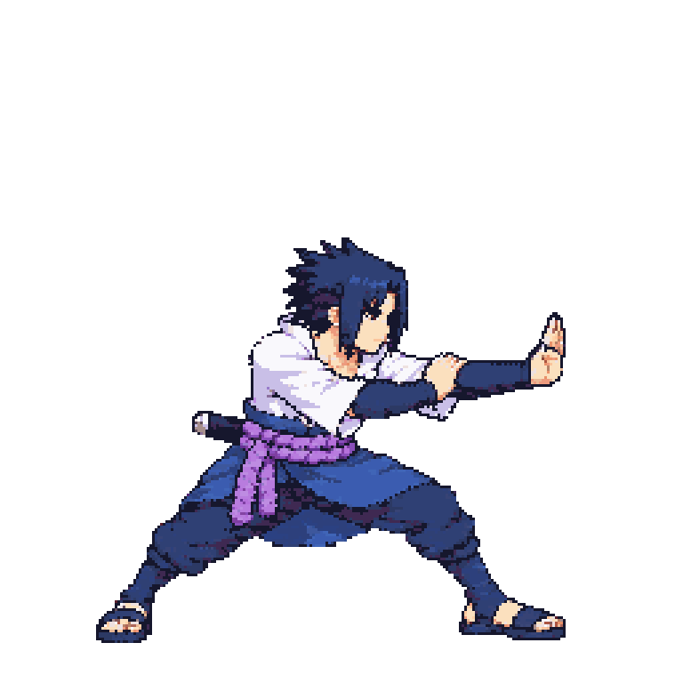
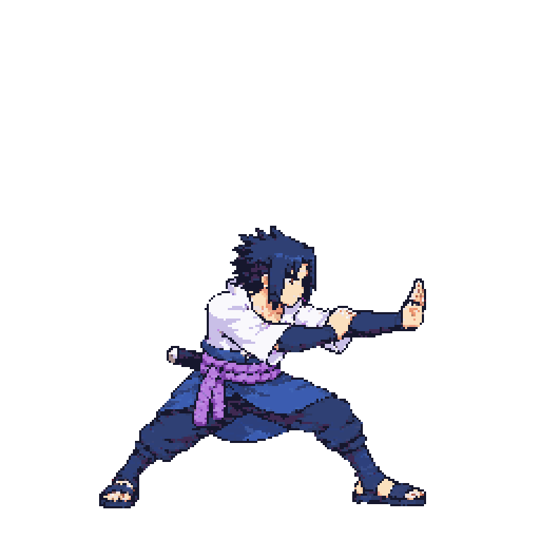
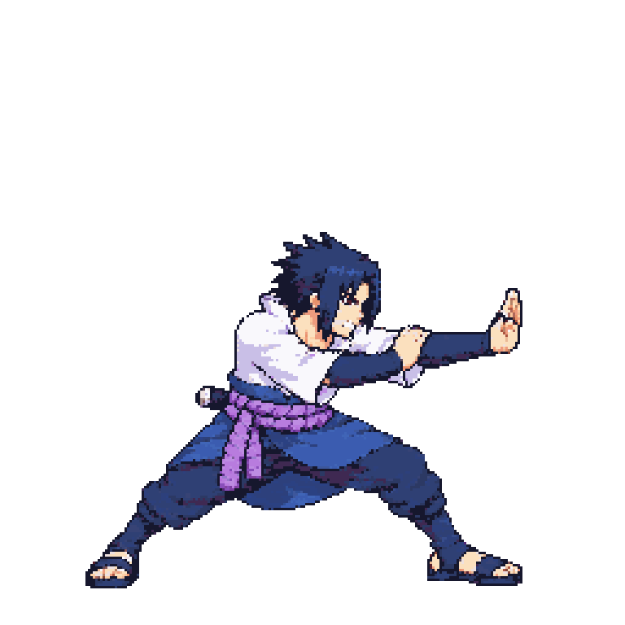
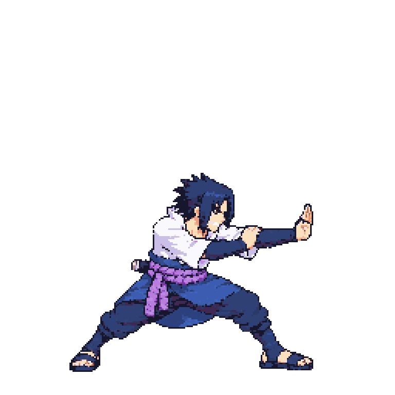
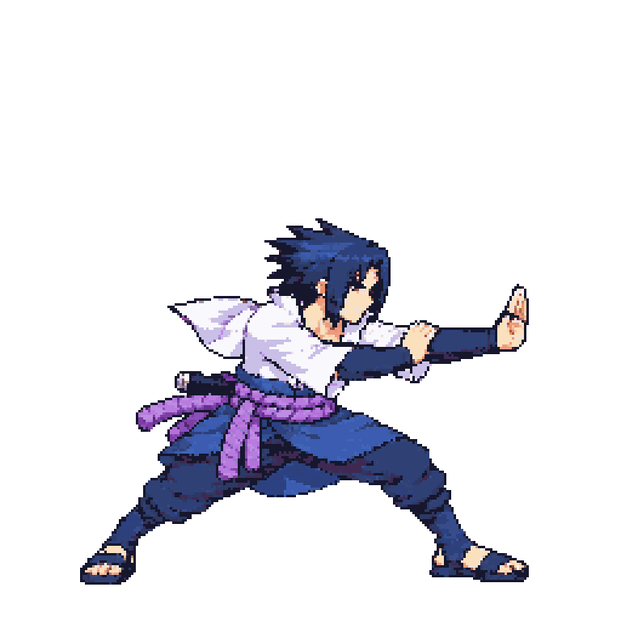
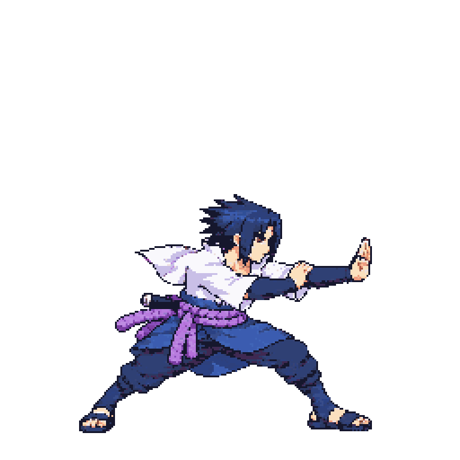

Approved idle f0

beamStruggle v05 — scale calibration reviewReady for visual review; not yet approved. v05 is a no-call re-assembly of the unchanged v01 pixels at bodyHeight 134 (about 1.10× from 122). v01 remains the shipped approved version until the user approves v05.
Relay #6 records rejection of v04 at bodyHeight152: its packed head measured 1.11–1.17 of idle by template match. The test candidate below uses the requested 134 setting. Source SHA-256: 00ADE94028B861DE74CE8095B5644A75D0AA5106013D4B55764B0045FDB993F1. Frames 0–2 keep the sleeve-related head-probe exemptions.










| Candidate/evidence | Template match vs idle | Scale setting | Notes |
|---|---|---|---|
| Rejected v04 | 1.11–1.17 | bodyHeight152 | User rejected as too large. |
| Candidate v05 | ~0.98–1.03 projected from v04 ratio × 134/152 | bodyHeight134 | Same v01 pixels; 1.10× from the original setting 122. |
Claude's template-match measurements from relay #5 on v01 (0.92/0.86/0.92; controls 0.98–1.02) and the user's v04 measurements from relay #6 are retained in scaleManualQA and the measurement record. The outstretched navy sleeve contaminates the automated head box, so scale review uses version-bound manual calibration. This page is for visual art approval; it does not approve pose, contact, gameplay or design.